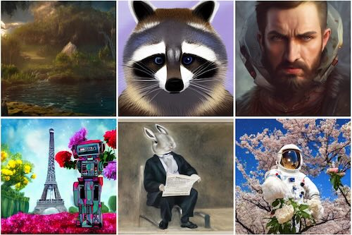

Sergey Tulyakov
Welcome! I'm a Director of Research, leading the Creative Vision at Snap Inc. We build large
generative models, make them efficient, and personalized.
Research
At Creative Vision, we strive to transform anyone into a creator. To achieve this, we focus on three core elements: skill, efficiency, and personalization. Our large generative models for images, videos, 3D, and 4D significantly boost skill. But that’s not enough! The creative process demands instantaneous feedback. To do so, we push efficiency to the edge, enabling our models to run on mobile phones at nearly real-time speeds while utilizing only a fraction of the size of larger models. Yet, this is still not enough. Each creator possesses a unique style and personality. Therefore, we not only build models that are efficient, but also make them personalized. Since the inception of our team, we have contributed substantially to products, used by hundreds of millions of Snapchatters everyday!
If our mission resonates with you, please send us an email. We are constantly in search of interns, collaborators, and researchers.
Community Service
I served as a technical program comitte member for all major computer vision, graphics and
machine learning conferences: CVPR, ECCV, ICCV, NeurIPS, ICLR, SIGGRAPH, SIGGRAPH Asia, ICML. Since 2022 I serve
as an AC for CVPR, ICML, NeurIPS, ICLR, WACV, 3DV, ECCV, ICCV. Since June 2024 I'm serving as an
Associate Editor for TPAMI.
Our team organizes tutorials, teaches courses, and gives keynotes.
A week-long course on "Teaching Computers to Imagine with Deep Generative Models"
A tutorial on "Unlocking Creativity with Computer Vision: Representations for
Animation, Stylization and Manipulation"
A tutorial on "Video Synthesis: Early Days and New Developments"
A tutorial on "Efficient Neural Networks: From Algorithm Design to Practical Mobile
Deployments"
Publications
This is an incomplete list. Please see my google scholar.
SF-V: Single Forward Video Generation Model
Zhixing Zhang, Yanyu Li, Yushu Wu, Yanwu Xu, Anil Kag, Ivan Skorokhodov, Willi Menapace, Aliaksandr Siarohin, Junli Cao, Dimitris Metaxas, Sergey Tulyakov, Jian Ren
Project
Paper
BitsFusion: 1.99 bits Weight Quantization of Diffusion Model
Yang Sui, Yanyu Li, Anil Kag, Yerlan Idelbayev, Junli Cao, Ju Hu, Dhritiman Sagar, Bo Yuan, Sergey Tulyakov, Jian Ren
Project
Paper
Lightweight Predictive 3D Gaussian Splats
Junli Cao, Vidit Goel, Chaoyang Wang, Anil Kag, Ju Hu, Sergei Korolev, Chenfanfu Jiang, Sergey Tulyakov, Jian Ren
Project
Paper
Taming Data and Transformers for Audio Generation
Moayed Haji-Ali, Willi Menapace, Aliaksandr Siarohin, Guha Balakrishnan, Sergey Tulyakov, Vicente Ordonez
Project
Paper
4Real: Towards Photorealistic 4D Scene Generation via Video Diffusion Models
Heng Yu, Chaoyang Wang, Peiye Zhuang, Willi Menapace, Aliaksandr Siarohin, Junli Cao, Laszlo A Jeni, Sergey Tulyakov, Hsin-Ying Lee
Project
Paper
GTR: Improving Large 3D Reconstruction Models through Geometry and Texture Refinement
Peiye Zhuang, Songfang Han, Chaoyang Wang, Aliaksandr Siarohin, Jiaxu Zou, Michael Vasilkovsky, Vladislav Shakhrai, Sergey Korolev, Sergey Tulyakov, Hsin-Ying Lee
Project
Paper
MoA : Mixture-of-Attention for Subject-Context Disentanglement in Personalized Image Generation
Kuan-Chieh (Jackson) Wang, Daniil Ostashev, Yuwei Fang, Sergey Tulyakov, Kfir Aberman
Project
Paper
TC4D: Trajectory-Conditioned Text-to-4D Generation
Sherwin Bahmani, Xian Liu, Yifan Wang, Ivan Skorokhodov, Victor Rong, Ziwei Liu, Xihui Liu, Jeong Joon Park, Sergey Tulyakov, Gordon Wetzstein, Andrea Tagliasacchi, David B. Lindell
European Conveference on Computer Vision, ECCV’2024
Project
Paper
UpFusion: Novel View Diffusion from Unposed Sparse View Observations
Bharath Raj Nagoor Kani, Hsin-Ying Lee, Sergey Tulyakov, Shubham Tulsiani
European Conveference on Computer Vision, ECCV’2024
Project
Paper
MyVLM: Personalizing VLMs for User-Specific Queries
Yuval Alaluf, Elad Richardson, Sergey Tulyakov, Kfir Aberman, Daniel Cohen-Or
European Conveference on Computer Vision, ECCV’2024
Project
Paper
Panda-70M: Captioning 70M Videos with Multiple Cross-Modality Teachers
Tsai-Shien Chen, Aliaksandr Siarohin, Willi Menapace, Ekaterina Deyneka, Hsiang-wei Chao, Byung Eun Jeon, Yuwei Fang, Hsin-Ying Lee, Jian Ren, Ming-Hsuan Yang, Sergey Tulyakov
Computer Vision and Patter Recognition, CVPR’2024
Project
Paper
Snap Video: Scaled Spatiotemporal Transformers for Text-to-video Synthesis
Willi Menapace, Aliaksandr Siarohin, Ivan Skorokhodov, Ekaterina Deyneka, Tsai-Shien Chen, Anil Kag, Yuwei Fang, Aleksei Stoliar, Elisa Ricci, Jian Ren, Sergey Tulyakov
Computer Vision and Patter Recognition, CVPR’2024. Highlight
Project
Paper
4D-fy: Text-to-4d Generation using Hybrid Score Distillation Sampling
Sherwin Bahmani, Ivan Skorokhodov, Victor Rong, Gordon Wetzstein, Leonidas Guibas, Peter Wonka, Sergey Tulyakov, Jeong Joon Park, Andrea Tagliasacchi, David B Lindell
Computer Vision and Patter Recognition, CVPR’2024
Project
Paper
SceneTex: High-Quality Texture Synthesis for Indoor Scenes via Diffusion Priors
Dave Zhenyu Chen, Haoxuan Li, Hsin-Ying Lee, Sergey Tulyakov, Matthias Nießner
Computer Vision and Patter Recognition, CVPR’2024. Highlight
Project
Paper
Towards Text-guided 3D Scene Composition
Qihang Zhang, Chaoyang Wang, Aliaksandr Siarohin, Peiye Zhuang, Yinghao Xu, Ceyuan Yang, Dahua Lin, Bolei Zhou, Sergey Tulyakov, Hsin-Ying Lee
Computer Vision and Patter Recognition, CVPR’2024
Project
Paper
TextCraftor: Your Text Encoder Can Be Image Guality Controller
Yanyu Li, Xian Liu, Anil Kag, Ju Hu, Yerlan Idelbayev, Dhritiman Sagar, Yanzhi Wang, Sergey Tulyakov, Jian Ren
Computer Vision and Patter Recognition, CVPR’2024
Project
Paper
Hierarchical Patch Diffusion Models for High-Resolution Video Generation
Ivan Skorokhodov, Willi Menapace, Aliaksandr Siarohin, Sergey Tulyakov
Computer Vision and Patter Recognition, CVPR’2024
Project
Paper
SPAD: Spatially Aware Multi-View Diffusers
Yash Kant, Aliaksandr Siarohin, Ziyi Wu, Michael Vasilkovsky, Guocheng Qian, Jian Ren, Riza Alp Guler, Bernard Ghanem, Sergey Tulyakov, Igor Gilitschenski
Computer Vision and Patter Recognition, CVPR’2024
Project
Paper
Promptable Game Models: Text-guided Game Simulation via Masked Diffusion Models
Willi Menapace, Aliaksandr Siarohin, Stéphane Lathuilière, Panos Achlioptas, Vladislav Golyanik, Sergey Tulyakov, Elisa Ricci
Transactions on Grahpics, TOG’2024
Project
Paper
Promptable Game Models: Text-guided Game Simulation via Masked Diffusion Models
Guocheng Qian, Jinjie Mai, Abdullah Hamdi, Jian Ren, Aliaksandr Siarohin, Bing Li, Hsin-Ying Lee, Ivan Skorokhodov, Peter Wonka, Sergey Tulyakov, Bernard Ghanem
International Conference on Learning Representations, ICLR’2024
Project
Paper
HyperHuman: Hyper-Realistic Human Generation with Latent Structural Diffusion
Xian Liu, Jian Ren, Aliaksandr Siarohin, Ivan Skorokhodov, Yanyu Li, Dahua Lin, Xihui Liu, Ziwei Liu, Sergey Tulyakov
International Conference on Learning Representations, ICLR’2024
Project
Paper
Text-Guided Synthesis of Eulerian Cinemagraphs
Aniruddha Mahapatra, Aliaksandr Siarohin, Hsin-Ying Lee, Sergey Tulyakov, Jun-Yan Zhu
Transactions on Graphics, SIGGRAPH Asia’2023
Project
Paper
NeurIPS - World's fastest mobile diffusion!

SnapFusion: Text-to-image Giffusion Model on Mobile Devices within Two Seconds
Yanyu Li, Huan Wang, Qing Jin, Ju Hu, Pavlo Chemerys, Yun Fu, Yanzhi Wang, Sergey Tulyakov, Jian Ren
Neural Information Processing Systems, NeurIPS’2023
Project
Paper
Autodecoding latent 3d diffusion models
Evangelos Ntavelis, Aliaksandr Siarohin, Kyle Olszewski, Chaoyang Wang, Luc Van Gool, Sergey Tulyakov
Neural Information Processing Systems, NeurIPS’2023
Project
Paper
Rethinking Vision Transformers for MobileNet Size and Speed
Yanyu Li, Ju Hu, Yang Wen, Georgios Evangelidis, Kamyar Salahi, Yanzhi Wang, Sergey Tulyakov, Jian Ren
International Conference on Computer Vision, ICCV’2023
Project
Paper
Text2Tex: Text-driven Texture Synthesis via Diffusion Models
Dave Zhenyu Chen, Yawar Siddiqui, Hsin-Ying Lee, Sergey Tulyakov, Matthias Nießner
International Conference on Computer Vision, ICCV’2023
Project
Paper
InfiniCity: Infinite-Scale City Synthesis
Chieh Hubert Lin, Hsin-Ying Lee, Willi Menapace, Menglei Chai, Aliaksandr Siarohin, Ming-Hsuan Yang, Sergey Tulyakov
International Conference on Computer Vision, ICCV’2023
Project
Paper
Unsupervised Volumetric Animation
Aliaksandr Siarohin, Willi Menapace, Ivan Skorokhodov, Kyle Olszewski, Jian Ren, Hsin-Ying Lee, Menglei Chai, Sergey Tulyakov
Computer Vision and Pattern Recognition, CVPR’2023
Project
Paper
Affection: Learning Affective Explanations for Real-World Visual Data
Panos Achlioptas, Maks Ovsjanikov, Leonidas Guibas, Sergey Tulyakov
Computer Vision and Pattern Recognition, CVPR’2023
Project
Paper
Real-Time Neural Light Field on Mobile Devices
Junli Cao, Huan Wang, Pavlo Chemerys, Vladislav Shakhrai, Ju Hu, Yun Fu, Denys Makoviichuk, Sergey Tulyakov, Jian Ren
Computer Vision and Pattern Recognition, CVPR’2023
Project
Paper
3DAvatarGAN: Bridging Domains for Personalized Editable Avatars
Rameen Abdal, Hsin-Ying Lee, Peihao Zhu, Menglei Chai, Aliaksandr Siarohin, Peter Wonka, Sergey Tulyakov
Computer Vision and Pattern Recognition, CVPR’2023
Project
Paper
SDFusion: Multimodal 3D Shape Completion, Reconstruction, and Generation
Yen-Chi Cheng, Hsin-Ying Lee, Sergey Tulyakov, Alex Schwing, Liangyan Gui
Computer Vision and Pattern Recognition, CVPR’2023
Project
Paper
DisCoScene: Spatially Disentangled Generative Radiance Fields for Controllable 3D-aware Scene Synthesis
Yinghao Xu, Menglei Chai, Zifan Shi, Sida Peng, Ivan Skorokhodov, Aliaksandr Siarohin, Ceyuan Yang, Yujun Shen, Hsin-Ying Lee, Bolei Zhou, Sergey Tulyakov
Computer Vision and Pattern Recognition, CVPR’2023. Highlight
Project
Paper
3D Generation on ImageNet
Ivan Skorokhodov, Aliaksandr Siarohin, Yinghao Xu, Jian Ren, Hsin-Ying Lee, Peter Wonka, Sergey Tulyakov
International Conference on Learning Representations, ICLR’2023. Oral
Project
Paper
Discrete Contrastive Diffusion for Cross-Modal Music and Image Generation
Ye Zhu, Yu Wu, Kyle Olszewski, Jian Ren, Sergey Tulyakov, Yan Yan
International Conference on Learning Representations, ICLR’2023
Project
Paper
EpiGRAF: Rethinking Training of 3D GANs
Ivan Skorokhodov, Sergey Tulyakov, Yiqun Wang, Peter Wonka
Neural Information Processing Systems, NeurIPS’2022
Project
Paper
EfficientFormer: Vision Transformers at MobileNet Speed
Yanyu Li, Geng Yuan, Yang Wen, Eric Hu, Georgios Evangelidis, Sergey Tulyakov, Yanzhi Wang, Jian Ren
Neural Information Processing Systems, NeurIPS’2022
Project
Paper
R2L: Distilling Neural Radiance Field to Neural Light Field for Efficient Novel View Synthesis
Huan Wang, Jian Ren, Zeng Huang, Menglei Chai, Kyle Olszewski, Yun Fu, Sergey Tulyakov
European Conference on Computer Vision, ECCV’2022
Project
Paper
NeROIC: Neural Rendering of Objects from Online Image Collections
Zhengfei Kuang, Kyle Olszewski, Menglei Chai, Zeng Huang, Panos Achlioptas, Sergey Tulyakov
Transactions on Graphics, SIGGRAPH’2022
Project
Paper
Playable Environments: Video Manipulation in Space and Time
Willi Menapace, Stéphane Lathuilière, Aliaksandr Siarohin, Christian Theobalt, Sergey Tulyakov, Vladislav Golyanik, Elisa Ricci
Computer Vision and Pattern Recognition, CVPR’2022
Project
Paper
Show Me What and Tell Me How: Video Synthesis via Multimodal Conditioning
Ligong Han, Jian Ren, Hsin-Ying Lee, Francesco Barbieri, Kyle Olszewski, Shervin Minaee, Dimitris Metaxas, Sergey Tulyakov
Computer Vision and Pattern Recognition, CVPR’2022
Project
Paper
StyleGAN-V: A Continuous Video Generator with the Price, Image Quality and Perks of StyleGAN2
Ivan Skorokhodov, Sergey Tulyakov, Mohamed Elhoseiny
Computer Vision and Pattern Recognition, CVPR’2022
Project
Paper
Motion Representations for Articulated Animation
Aliaksandr Siarohin, Oliver Woodford, Jian Ren, Menglei Chai, Sergey Tulyakov
Computer Vision and Pattern Recognition, CVPR’2021
Project
Paper
Playable Video Generation
Willi Menapace, Stéphane Lathuilière, Sergey Tulyakov, Aliaksandr Siarohin, Elisa Ricci
Computer Vision and Pattern Recognition, CVPR’2021. Oral
Project
Paper
A Good Image Generator Is What You Need for High-Resolution Video Synthesis
Yu Tian, Jian Ren, Menglei Chai, Kyle Olszewski, Xi Peng, Dimitris N. Metaxas, Sergey Tulyakov
International Conference on Learning Representations, ICLR’2021. Spotlight
Project
Paper
First Order Motion Model for Image Animation
Aliaksandr Siarohin, Stéphane Lathuilière, Sergey Tulyakov, Elisa Ricci, Nicu Sebe
Neural Information Processing Systems, NeurIPS’2019
Project
Paper
MoCoGAN: Decomposing Motion and Content for Video Generation
Sergey Tulyakov, Ming-Yu Liu, Xiaodong Yang, Jan Kautz
Computer Vision and Pattern Recognition, CVPR’2018
Project
Paper
Self-Adaptive Matrix Completion for Heart Rate Estimation from Face Videos under Realistic Conditions
Sergey Tulyakov, Xavier Alameda Pineda, Elisa Ricci, Jijun Yin, Jeffrey Cohn, Nicu Sebe
Computer Vision and Pattern Recognition, CVPR’2016. Oral
Project
Paper